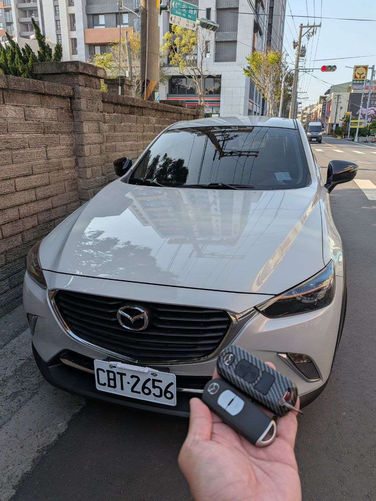

現場實拍：彰化和美地區 Mazda CX-3 智能感應鑰匙新增完成
和美街頭的技術任務：Mazda 智能系統解密
今日來到彰化和美，為一位 Mazda CX-3 車主進行智慧鑰匙新增服務。Mazda 的智能系統（Smart Keyless）雖然使用便利，但其防盜加密邏輯對後端匹配設備的穩定性要求極高。
極致職人：無損匹配與原廠級品質
我們採用最先進的 OBD 解碼設備，在不拆卸任何車內飾板、不更動原車線路的原則下，直接進入車輛後端管理系統進行密鑰授權。本次新增的智能鑰匙具備與原廠一致的「免鑰匙進入」及「一鍵啟動」功能。
晶片穩定性
採用高規感應晶片，確保在各種環境下都能精準感應。
極速完工
現場從數據採集到鑰匙匹配成功，僅需約 30 分鐘。